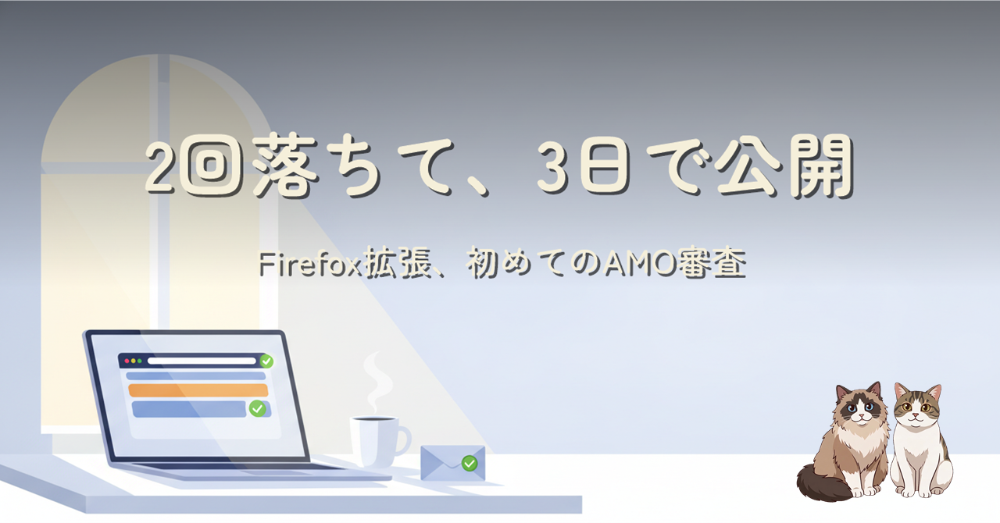

X の複数アカウント運用のためにコンテナ名をタブタイトルへ差し込む Firefox 拡張を作り、AMO の検証に 2 回落ちてから 3 日後に承認・公開されました。実装は最終的に 3 ファイル・100 行程度に収まり、権限も contextualIdentities / cookies / storage の 3 つまで絞り込みました。Chrome での挫折から Firefox のコンテナ機能にたどり着き、拡張を自作して提出するまでの 3 本の記事を、この記事で一区切りにします。
AMO の「暫定承認」は自動審査を通過した状態であり、この日がゴールとは限りません。公開後も追加の人力レビューが来る可能性を残したまま、実際にインストールして動作を確認するところから話は始まります。実装は最初の PoC から大きく増えず、むしろリリース前に不要な権限（tabs）を削る作業のほうが効いた点や、ストア掲載用スクリーンショットにもタブタイトル経由で実データが写り込むという地味な落とし穴も含めて、公開までの 3 本の記事を振り返ります。